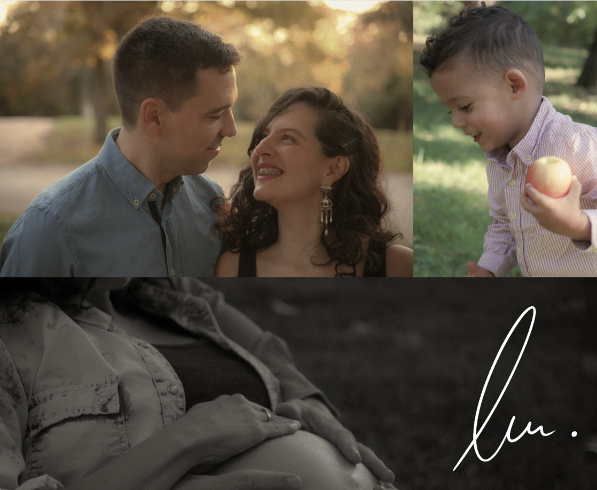

Alejandro de Lucas · Fotografía
Portfolio of a photographer specializing in family photography and analog photos. A clean website where the pictures are the stars.
- My role
- Design, code and publishing
- Built with
- HTML and CSS, on GitHub Pages